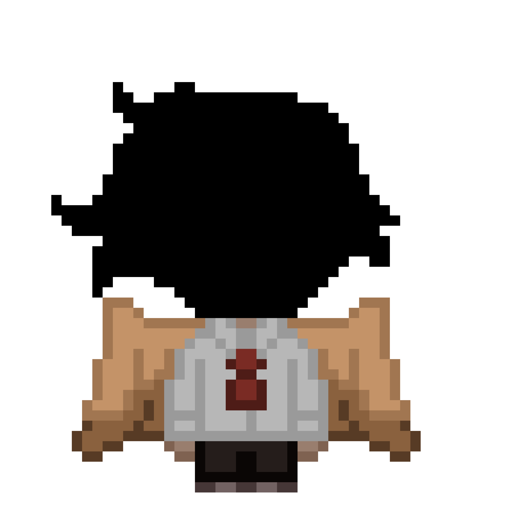
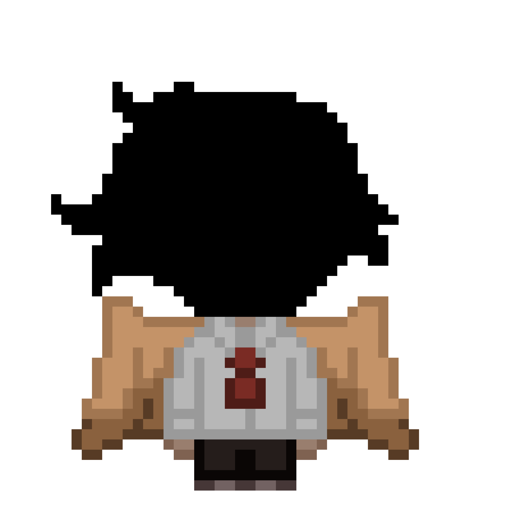
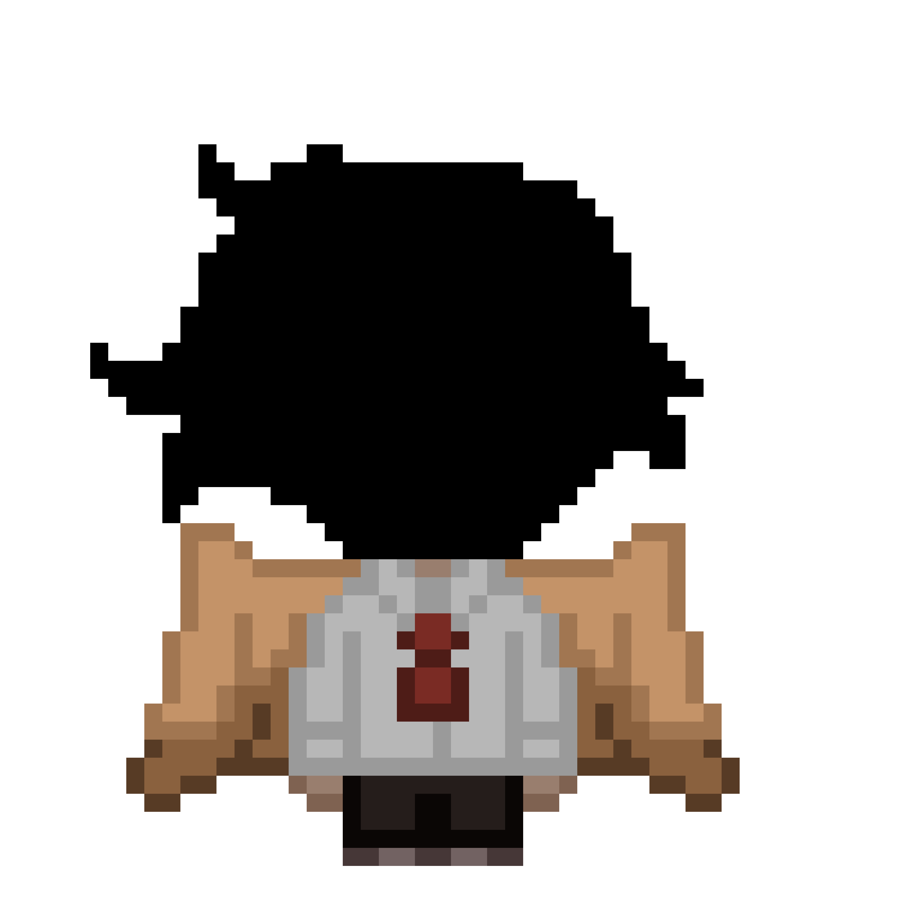

:/ДЕЛО 7

:/ДЕЛО 7

|

/
|
:/ДЕЛО 7

|
/
в одном куске изначального мира «оригинала», в “дюнах де оро” появился пробел, т.к. оригинал пропал. была отличная возможность заполнить пустую строчку кода мира, и втиснуть туда копию, почти повторяющую его в молодости, тогда, когда он там жил. он жил в неведении, можно сказать, он единственный из копий ЖИЛ самой спокойной жизнью. на данный момент он замечает подозрительные вещи вокруг себя, подмечая что живет будто в нереальном мире.
данная копия никак не контактирует с кем-либо из копий или оригиналом, он даже не знает о их существовании. знает, что за ним наблюдает какая то непростая птица. ранее, он познакомился с ней в один солнечный день как обычно сидя на пляже тренируя свою игру на гитаре, в последующие в дни он встречал ее там же. но со временем 7 заметил, что та для уличной птицы, даже не смотря на то что это ворон, больно смышлен.
подкрепляют его подозрения и пропажа заметок с доски дома, вещей и другие странности. и дни постепенно становились все больше похожи друг на друга, причем буквально. как будто идеи в сценарии для мира просто кончились и мир просто проживает последний прописанный в сценарии день раз за разом где происходят одни и те же события, создавая то ли временную петлю, то ли 7 просто оказался в “дне сурка”. естественно ни кто не вынесет такого ужаса, что тот просто начал сходить постепенно с ума, пока не психанул и не закрылся у себя дома, где даже там, что то необъяснимое смогло достать его и украсть факты доказывающие “чье то” существование.
но для чего? сущность желает добра и видит что с ним происходит, но даже не хочет поговорить? а точно ли в таком случае желают добра? а что если это уже невыносимо? жизнь не собирается возвращаться к жизни? она навсегда потускнеет как и его яркие золотые крылья 7? как и он сам?
- он является молодой версией «оригинала”.
-дюнес де оро чем то похожи на Испанию и Мексику
-музыкант, играет на гитаре и отлично поет.
- его жизнь охраняет кто то из работников “космос”. неизвестный так же дарит ему подарки на праздники, а он не знает, откуда они берутся. никто не знает.
- пытался научить ворону петь gangnam style, научил только матам